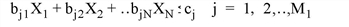
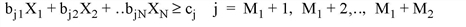
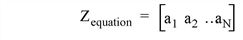
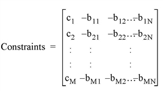
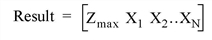
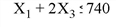
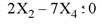
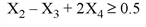
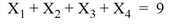

The SIMPLEX function uses the simplex method to solve linear programming problems. Given a set of N independent variables X i , where i = 0, ..., N , the simplex method seeks to maximize the following function,
with the assumption that X i ≥ 0. The X i are further constrained by the following equations:



where M = M 1 + M 2 + M 3 is the total number of equations, and the constraint values c j must all be positive.
To solve the above problem using the SIMPLEX function, the Z equation is rewritten as a vector:

The constraint equations are rewritten as a matrix with N +1 columns and M rows, where all of the b coefficients have had their sign reversed:

Note: The constraint matrix must be organized so that the coefficients for the less-than (<) equations come first, followed by the coefficients of the greater-than (>) equations, and then the coefficients of the equal (=) equations.
The SIMPLEX function is based on the routine simplx described in section 10.8 of Numerical Recipes in C: The Art of Scientific Computing (Second Edition), published by Cambridge University Press, and is used by permission.
Result = SIMPLEX( Zequation , Constraints , M 1 , M 2 , M 3 [, Tableau [, Izrov [, Iposv ] ] ] [, / DOUBLE ] [, EPS = value ] [, STATUS = variable ] )
The Result is a vector of N +1 elements containing the maximum Z value and the values of the N independent X variables (the optimal feasible vector):

A vector containing the N coefficients of the Z equation to be maximized.
An array of N +1 columns by M rows containing the constraint values and coefficients for the constraint equations.
An integer giving the number of less-than constraint equations contained in Constraints . M1 may be zero, indicating that there are no less than constraints.
An integer giving the number of greater-than constraint equations contained in Constraints . M2 may be zero, indicating that there are no greater than constraints.
An integer giving the number of equal-to constraint equations contained in Constraints . M3 may be zero, indicating that there are no equal to constraints. The total of M1 + M2 + M3 should equal M, the number of constraint equations.
Set this optional argument to a named variable in which to return the output array from the simplex algorithm. For more detailed discussion about this argument, see the write-up in section 10.8 of Numerical Recipes in C .
Set this optional argument to a named variable in which to return the output izrov variable from the simplex algorithm. For more detailed discussion about this argument, see the write-up in section 10.8 of Numerical Recipes in C .
Set this optional argument to a named variable in which to return the output iposv variable from the simplex algorithm. For more detailed discussion about this argument, see the write-up in section 10.8 of Numerical Recipes in C .
Set this keyword to use double-precision for computations and to return a double-precision result. Set DOUBLE to 0 to use single-precision for computations and to return a single-precision result. The default is /DOUBLE if any of the inputs are double-precision, otherwise the default is 0.
Set this keyword to a number close to machine accuracy, which is used to test for convergence at each iteration. The default is 10 –6 .
Set this keyword to a named variable to receive the status of the operation. Possible status values are:
|
Value |
Description |
|
0 |
Successful completion. |
|
1 |
The objective function is unbounded. |
|
2 |
No solution satisfies the given constraints. |
|
3 |
The routine did not converge. |
The following example is taken from Numerical Recipes in C .
Find the Z value which maximizes the equation Z = X 1 + X 2 + 3 X 3 - 0.5 X 4 , with the following constraints:




To find the solution, enter the following code at the IDL command line:
; Set up the Zequation with the X coefficients.
Zequation = [1,1,3,-0.5]
; Set up the Constraints matrix.
Constraints = [ $
[740, -1, 0, -2, 0], $
[ 0, 0, -2, 0, 7], $
[0.5, 0, -1, 1, -2], $
[ 9, -1, -1, -1, -1] ]
; Number of less-than constraint equations.
m1 = 2
; Number of greater-than constraint equations.
m2 = 1
; Number of equal constraint equations.
m3 = 1
;
; Call the function.
result = SIMPLEX(Zequation, Constraints, m1, m2, m3)
;
; Print out the results.
PRINT, 'Maximum Z value is: ', result[0]
PRINT, 'X coefficients are: '
PRINT, result[1:*]
IDL prints:
Maximum Z value is: 17.0250
X coefficients are:
0.000000 3.32500 4.72500 0.950000
Therefore, the optimal feasible vector is X 1 = 0.0, X 2 = 3.325, X 3 = 4.725, and X 4 = 0.95.
|
5.5 |
Introduced |